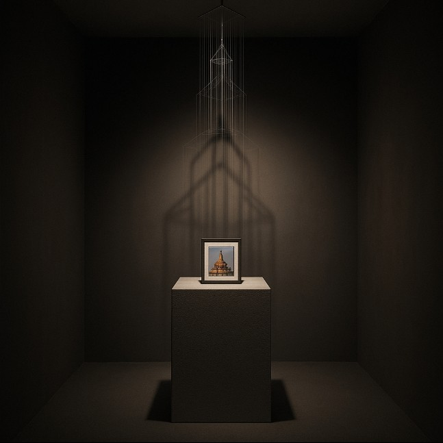

01
Сухаревская башня

Идея
Мне хотелось построить пространство, где архитектура существует не из камня, а из света. Башня собрана из почти невидимых лесок — тонких линий воздуха. Когда на них падает луч, появляется её тень, будто память формы, которая больше не принадлежит реальности. Это про присутствие в отсутствии, про то, как свет может вернуть то, чего уже нет.
Смысл
Для меня это проект о памяти и хрупкости. Всё исчезает, но остаётся нематериальный, световой след. Башня существует только пока есть свет и внимание зрителя — так прошлое удерживается через взгляд и желание помнить.
- Материалы
- Стекло, леска, алюминий, текстиль, направленный тёплый свет.